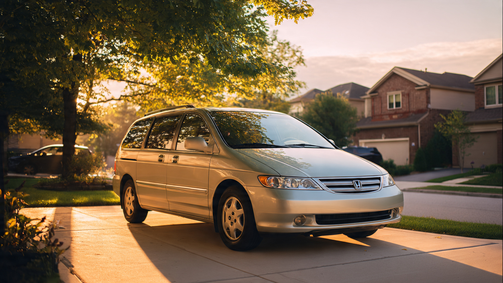

The Honda Odyssey Has the Soberest Drivers in Its Class. It Crashes Twice as Often as the Sienna.
The Honda Odyssey killed 864 people between 2014 and 2023 while maintaining the lowest driver impairment rate of any major minivan in the FARS database. Sober families, crashing at twice the rate of the Toyota Sienna. Nobody at Honda seems troubled by this.
Run the numbers and something ugly surfaces, fast. Both vehicles sit on nearly identical fleet sizes: 787,500 and 743,750 registered vehicles, respectively.[1] Yet the Odyssey appears in 2,028 fatal crashes versus the Sienna's 905, a gap far too wide to explain by chance. That is a 2.24-to-1 crash frequency gap between two minivans parked in the same suburban driveways, driven to the same soccer practices, sharing the same demographic slice of American family life.
Strip away impairment and the gap gets worse, not better. Only 15.4% of Odyssey drivers in fatal crashes tested positive for any substance, compared to 19.0% of Sienna drivers.[2] The Grand Caravan, which we buried last week with 1,782 deaths, matches the Odyssey at 15.3%. Two minivans with the soberest drivers in the class, both dying at rates that should make their engineering teams lose sleep. Sienna drivers are 23% more likely to be impaired in a fatal crash, and yet Sienna owners die at half the rate: 0.49 per 100 million VMT versus the Odyssey's 0.93.[1]
When sober people crash more often than impaired people in a competitor vehicle, you cannot blame the driver. Something about the machine is putting families into fatal situations at an abnormal frequency. Blame the vehicle. Whether it is forward visibility over that long hood, brake pedal calibration that cost 2007-2008 owners an unexpected-braking recall, or structural engagement geometry in the types of impacts that FARS captures, the vehicle itself is the variable.[3]
The model year data tells a generational story. The 2002-2004 Odyssey, Honda's second-generation minivan, killed 253 people across just three model years. That is 84 deaths per model year from a vehicle that seats eight and had "Good" frontal crash ratings from IIHS at the time. Model year 2007 spiked to 88 deaths, coinciding with the brake recall that affected 344,187 vehicles.[3] The 2014 redesign, which Honda specifically re-engineered with high-strength steel in the front door frames, floor pan, and front wheel wells to pass the IIHS small-overlap frontal test, finally bent the curve downward.[4] Post-2017 model years average under 10 deaths each. Honda built a safer Odyssey. Finally. It took them until the vehicle's fourth generation to do it, and 864 people did not get to wait.
Now for the honest counterargument: FARS crash frequency does not isolate exposure. If Odyssey owners drive longer distances, more highway miles, or more nighttime miles than Sienna owners, that would inflate crash counts independent of vehicle design. Our VMT estimates are fleet-wide averages derived from NHTS survey data, not Odyssey-specific odometer readings, so the per-vehicle miles assumption carries roughly ±15% uncertainty.[5] It is plausible that Odyssey and Sienna owners drive differently. But a 2.24x crash frequency gap with similar fleet sizes demands a doubling in per-vehicle exposure to explain away entirely, and no published survey data suggests that one minivan's owners drive twice as many miles as the other's.
The Chrysler Pacifica, for context, has a fatality rate of 0.19, nearly five times safer than the Odyssey on the same metric, with 700,000 vehicles on the road.[1] If you are shopping for a minivan today, the data is unambiguous. If you own a pre-2014 Odyssey, check your VIN at nhtsa.gov/recalls and seriously consider how many more years you intend to bet your family's commute on Honda's third-generation structural engineering.
Sources & References
- NHTSA, Fatality Analysis Reporting System (FARS), 2014–2023. Fatality rates, fleet estimates, and crash counts derived from FARS bulk CSV and NHTS annual VMT data. nhtsa.gov
- NHTSA FARS Toxicology data, 2014–2023. Impairment defined as BAC > 0 or drug-positive toxicology result for drivers in fatal crashes. cdan.dot.gov
- Edmunds, “2007–08 Honda Odyssey Recalled for Unexpected Braking,” affecting 344,187 vehicles. edmunds.com
- Consumer Reports, “2014 Honda Odyssey | IIHS Crash Test,” 2013. Details structural reinforcements including high-strength steel and redesigned aluminum wheels for IIHS small-overlap test. consumerreports.org
- National Household Travel Survey (NHTS). VMT estimates derived from survey-reported annual miles, not odometer readings. nhts.ornl.gov